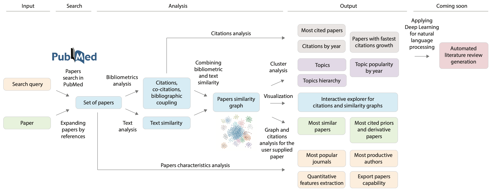
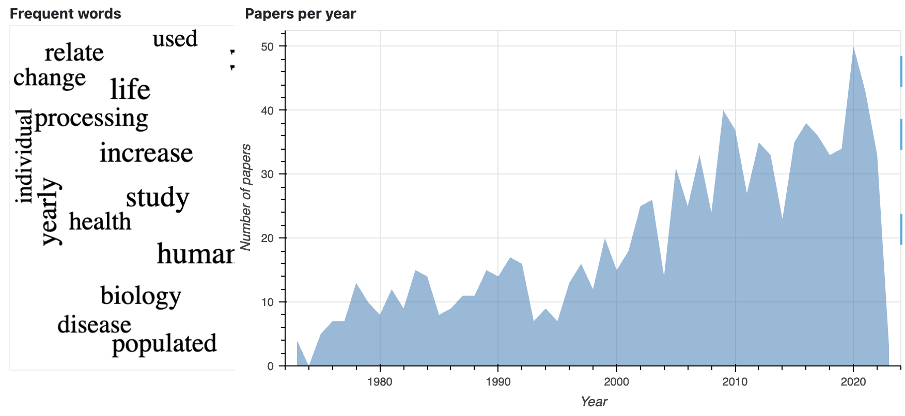
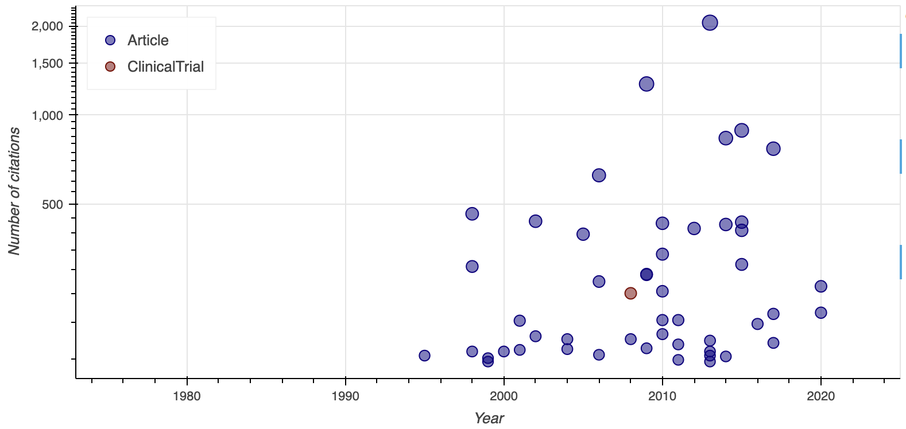
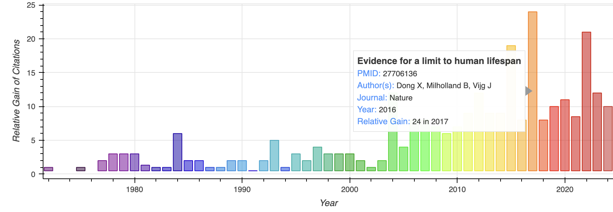
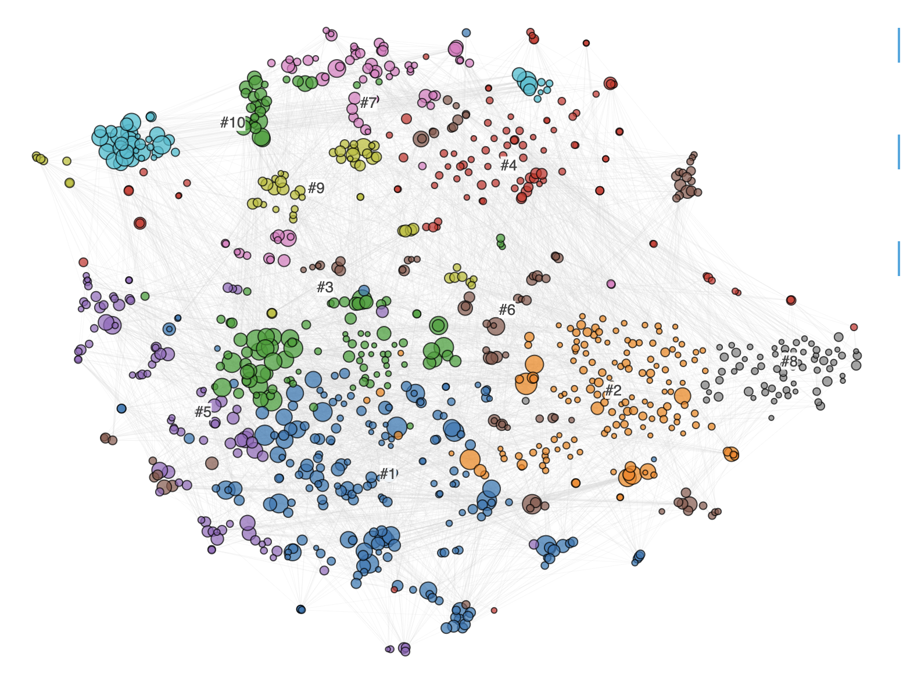
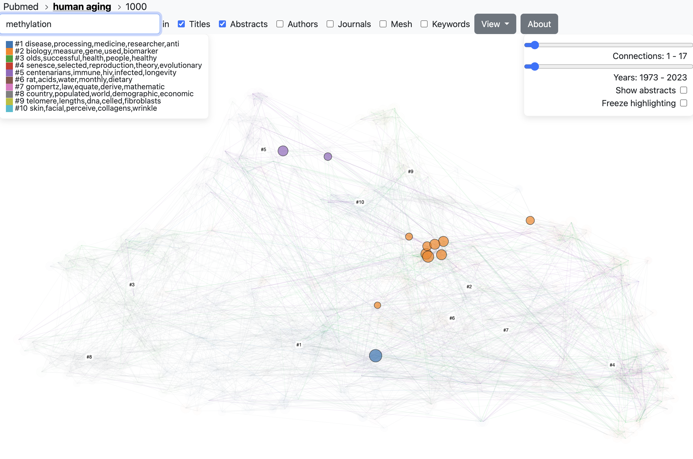
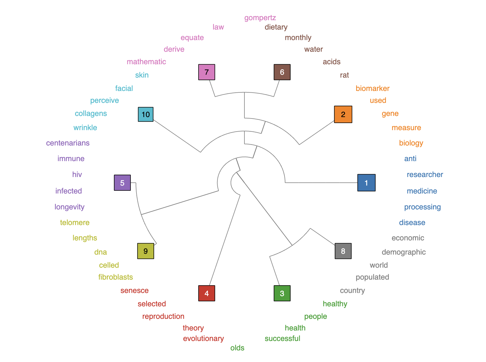
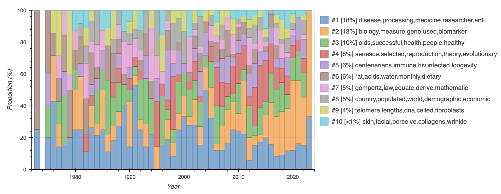
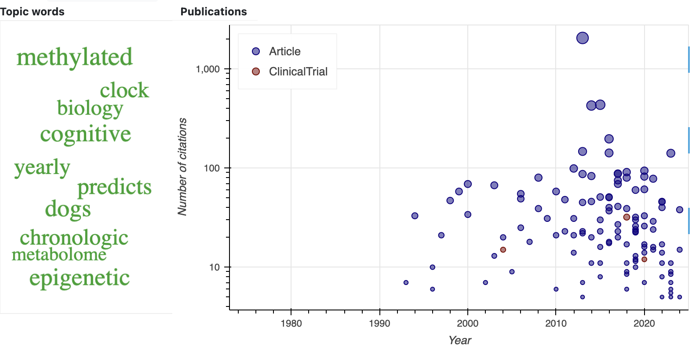

What is PubTrends?
PubTrends is a modern explorer for scientific literature. It helps you cut through the noise, surface the right papers faster, and understand how a research field evolves over time.
Datasets
PubTrends works with widely used, reputable sources of scholarly metadata.
Workflow
From data collection to insight: PubTrends automates the heavy lifting so you can focus on interpretation. Enter a query or paper → we fetch and enrich metadata → you explore trends, networks, and topics to draw conclusions.
Example walk‑through
Below is a short tour using the predefined query “human aging”.
Papers
The Papers view summarizes the field: total articles, extracted topics, a clickable word cloud of frequent terms, a yearly publications timeline, and a list view for quick scanning. Sort and filter to hone in on reviews, specific years, or article types.
Top cited papers
Explore the most influential works, grouped by citation count and article type, with intuitive color coding. Use this to identify seminal contributions and foundational reviews.
Hot papers
See per‑year standouts — papers with the highest yearly citation counts. A quick way to spot rising topics and high‑impact results in recent years.
Network
We group related papers into topics using graph and text embeddings to detect similarity at scale. The overall field structure is visualized as a paper‑similarity graph. This helps reveal subfields, bridge papers, and clusters that warrant deeper review.
Interactive visualization
The dedicated graph explorer lets you color by year or topic, filter using metadata, and search within the network. In the screenshot, nodes are colored by topic and filtered by the keyword “methylation”. Pan and zoom to focus on neighborhoods; click a node to open details.
Topics
Topics are detected via hierarchical clustering on paper embeddings. Explore the hierarchy using an interactive dendrogram. Drill down to sub‑clusters to find focused areas and representative works.
Topics by year
See how interest shifts across topics year‑by‑year. Each topic is summarized by key keywords and its share of all papers. Compare rises and declines to time your literature reviews.
Topic keywords
Each topic includes a word cloud and article plot. Word sizes reflect topic‑specific importance based on the share of papers mentioning the term. Use this to align terminology and quickly jump into the most relevant articles.
Other
Citations
- Shpynov, O. and Kapralov, N., PubTrends: a scientific literature explorer. In Proceedings of the 12th ACM Conference on Bioinformatics, Computational Biology, and Health Informatics, 2021 (pp. 1-1). https://doi.org/10.1145/3459930.3469501
- Nikiforovskaya, A., Kapralov, N., Vlasova, A., Shpynov, O. and Shpilman, A., 2020, December. Automatic generation of reviews of scientific papers. In 2020 19th IEEE International Conference on Machine Learning and Applications (ICMLA) (pp. 314-319). IEEE. https://arxiv.org/abs/2010.04147
Code
Source code is available on GitHub: